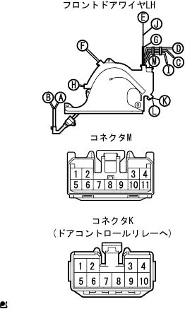
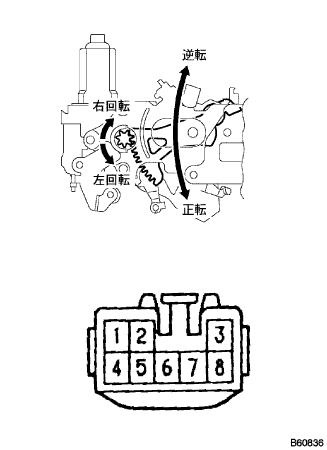
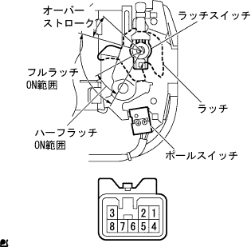
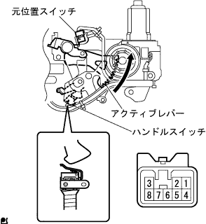
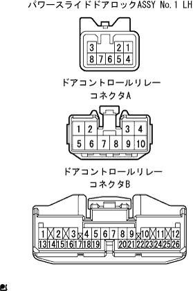

スライドドアイージークローザーシステム スライドドアを閉じて半ドア状態にしたときイージークローザーが作動しない |
| 手順1 | ドアロック作動点検 |
手動でスライドドアを閉じたとき、ドアが全閉(フルロック)状態になることを点検する。
|
| ||||
| OK | |
| 手順2 | ドア コントロール リレー点検 |
電圧点検
SST(トヨタエレクトリカルテスター)を使用して、ドアコントロールリレー車両側コネクタ各端子とボデーアース間の電圧を点検する。

| 端子番号 | 項目 | 測定条件 | 基準 |
| B11←→ボデーアース | 電圧 | 常時 | 10-14V |
| A8←→ボデーアース | 電圧 | 常時 | 10-14V |
|
| ||||
| NG | |
| 手順3 | フロントドア ワイヤ LH点検 |
フロントドアワイヤ LH点検
フロントドアワイヤ LHのコネクタA、BおよびK、Lを切り離し、SST(トヨタエレクトリカルテスター)を使用して、フロントドアワイヤ LHのコネクタ各端子間の導通を点検する。
| 端子番号 | 基準 |
| A1←→L11 | 導通あり |
| B1←→K8 | 導通あり |
|
| ||||
| OK | ||
| ||
| 手順4 | ドア コントロール リレー点検 |
導通点検
 |
ドアコントロールリレーのコネクタAを切り離し、SST(トヨタエレクトリカルテスター)を使用して、ドアコントロールリレー車両側コネクタK7端子←→ボデーアース間の導通を点検する。
| 端子番号 | 基準 |
|---|---|
| K7←→ボデーアース | 導通あり |
|
| ||||
| NG | |
| 手順5 | フロントドア ワイヤ LH点検 |
導通点検
|  |
フロントドアワイヤ LHのコネクタK、Mを切り離し、SST(トヨタエレクトリカルテスター)を使用して、フロントドアワイヤ LHのコネクタ端子間の導通を点検する。
| 端子番号 | 基準 |
| K7←→M11 | 導通あり |
|
| ||||
| OK | ||
| ||
| 手順6 | パワースライドドア ロックASSY NO.1 LH単体点検 |
|  |
パワースライドドアロックASSY No.1 LH作動点検
コネクタの各端子にバツテリ電圧をく加えたときのモータの作動を点検する。
| 測定条件 | 作動 (ドアロック) |
| バツテリプラス←→1端子 バツテリマイナス←→4端子 | 正転作動 (モータ左回転) |
| バツテリプラス←→4端子 バツテリマイナス←→1端子 | 逆転作動 (モータ右回転) |
|  |
ポールスイッチおよびラッチスイッチ導通点検
SST(トヨタエレクトリカルテスター)を使用して、各ラッチ位置のとき、コネクタ各端子間の導通を点検する。
| 測定条件 | 端子番号 | 基準 |
| ハーフラッチON範囲 | 6←→5 | 導通あり |
| フルラッチON範囲 | 3←→5 | 導通あり |
| オーバーストローク | - | 導通なし |
| 測定条件 | 端子番号 | 基準 |
|---|---|---|
| ハーフラッチON→OFF時 | 7←→5 | 導通あり→なし |
| フルラッチON→OFF | 7←→5 | 導通あり→なし |
|  |
元位置スイッチおよびハンドルスイッチ導通点検
SST(トヨタエレクトリカルテスター)を使用して、各スイッチ状態のとき、コネクタ端子間の導通を点検する。
| 元位置スイッチ状態 | ハンドルスイッチ状態 | 基準 |
| OFF (アクティブレバー初期位置) | ON (ハンドル初期位置) | 8←→5端子間 導通なし |
| OFF (アクティブレバー初期位置) | OFF (ハンドル操作時) | 8←→5端子間 導通なし |
| ON (クローザ作動時) | ON (ハンドル初期位置) | 8←→5端子間 導通あり |
| ON (クローザ作動時) | OFF (ハンドル操作時) | 8←→5端子間 導通なし |
|
| ||||
| OK | |
| 手順7 | ワイヤハーネス点検 |
導通点検
ドアコントロールリレーのコネクタA、BおよびパワースライドドアロックASSY No.1 LHのコネクタを切り離す。
|  |
SST(トヨタエレクトリカルテスター)を使用してドアコントロールリレー車両側コネクタ←→パワースライドドアロックASSY No.1 LH車両側コネクタ各端子間の導通を点検する。
| 端子番号 (リレー←→ロック) | 基準 |
| A5←→1 | 導通あり |
| A1←→4 | 導通あり |
| B5←→3 | 導通あり |
| B4←→6 | 導通あり |
| B18←→7 | 導通あり |
| B19←→8 | 導通あり |
|
| ||||
| OK | ||
| ||